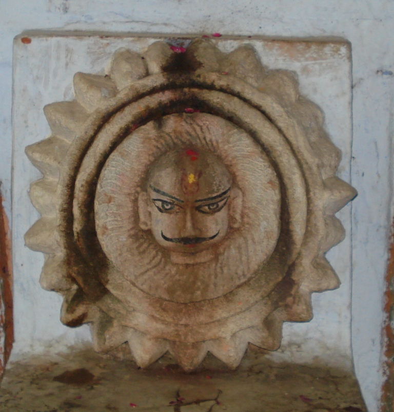

Khakholkh Aditya1
📖 Puranic Origin & Significance
Sage Kashyap had many wives of which two were Kadru and Vinata. Kadru gave birth to children who were snakes and Vinata who was a huge bird gave birth to Garuda.
Both the sisters were playful. While Kadru was cunning, Vinata was very innocent. Once Kadru, with an ulterior motive in her mind, asked Vinata to play a guess game and the sister who loses in the game will become slave to the winner. Vinata agreed. The guess game was “what is the colour of the Uchchaisrva, one of the horses which draws Lord Surya’s Chariot”. It was well known that the colour was white and Vinata told accordingly.
But Kadru had other game plan in her mind. Upon her insistence, her children (snakes) twined themselves round the tail of the horse Uchchaisrva and started spewing venom. The colour of the horse became grayish black. Vinata lost the game and was enslaved to Kadru and her snake sons. She was very much ill treated and her son, Garuda was deeply pained at her woeful plight.
He appealed to the sons of Kadru to release his mother. They agreed to do so on one condition that he should bring them Amrit (nectar). Garuda knew this was an arduous task because Nectar was closely guarded by the Devas. However, as a dutiful son, he left for Dev Lok to accomplish the mission impossible. In the process, he had to fight with Lord Vishnu. Lord Vishnu was deeply touched by the respect which Garuda had for his mother as well as his filial obligations and told Garuda that henceforth he (Garuda) would be Lord Vishnu’s vehicle.
As regards Amrit, Lord Vishnu let Garuda take it to the snake children as ransom for release of his mother but cautioned that under no circumstances the snakes were to drink it. Garuda took the amrit and gave it to the snake children. His mother was freed by the snakes as per the agreement. Before they could consume the amrit, Garuda told them that the amrit was the purest elixir and a person who wants to consume it should get himself purified first by having a holy bath. Accordingly, the snakes placed the vessel containing the amrit on a mat made of dry grass and left for performing ablutions. In their absence, Lord Vishnu took the vessel and vanished because it did not belong to the snakes rightfully.
When the snakes returned they were anguished to see the vessel missing and with a view to getting at least a drop of amrit, they started licking the mat. The dry grass was very sharp and it slit their tongues. To this day, snakes are born with a forked tongue because they tried to consume something which they had not rightfully earned. Even now, elders advise people to take or consume only such things which have been rightfully earned.
Later, Vinata told her son Garuda that she must have committed some sin which made her a slave. She desired to go to Kashi for atonement of her sins. Garuda took her to Kashi where Garuda installed a Shiv Ling and started praying ardently. Vinata started worshipping Lord Surya in his form as Khakholkh Aditya. Lord Shiva appeared in person and blessed Garuda stating that the latter would be known by everyone in the world as the vehicle/ride (vahana) of Lord Vishnu.
(KHAKHOLKH ADITYA)
Lord Surya also appeared in person before Vinata and blessed her, whereupon Vinata was absolved of all her sins. According to Kashi Khand, Chapter 50, Khakholkh Aditya finds mention in the proximity of Pilpila Teerth.
-----------------------------------
Kashi Khand, Chapter 50, Shlok 150
काश्यां पैशङ्गिले तीर्थे खखोल्कस्य विलोकनात्
नरश्चिन्तितमाप्नोति नीरोगो जायते क्षणात्
By having darshan of Khakholkh Aditya near Pilpila Teerth (Trilochan area), the devotee is freed of all his sins, achieves all things desired and is cured of all illness.
-----------------------------------
🕮 Sanskrit Verses (Kashi Khand)
काश्यां पैशङ्गिले तीर्थे खखोल्कस्य विलोकनात्
नरश्चिन्तितमाप्नोति नीरोगो जायते क्षणात्
📍 Location & Approach Route
Stated Address: Kameshwar Temple at A-2/9 North of Trilochan. The temple is approachable from a famous locality called Machhodari
Nearby Ghat: Not directly on a riverfront ghat
Zone Verification: North Kashi (Confidence: High)
Evidence: North landmarks: ['trilochan', 'machhodari', 'kameshwar']
Directions: Khakholkh Aditya is located at Kameshwar Temple at A-2/9 North of Trilochan. The temple is approachable from a famous locality called Machhodari. Devotees can travel upto Macchodari, take a right circular turn, reach Birla Hospital and take a right turn. Kameshwar temple is located in a Gully there.
⏰ Darshan Timings & Ritual Logistics
Timings: S
The temple is open for worship from 05.00 a.m. to 12.00 Noon and 05.00 p.m. to 10.00 p.m. Mangala Aarti is held at 5.30 a.m. and Shayan Aarti at 09.30 p.m.
POOJARIS OF THE TEMPLE
Shri Rajesh Giri is the Poojari of the temple and he can be contacted on his Cell number (0) 9839703054 for doing any special pooja etc.
Puja Details: Self-abhisheka / pooja usually permitted with priest guidance. Local offerings: Ganga water, bel patra, flowers, sindoor/chandan.
📜 Scriptural References
Kashi Khand, Chapter 50, Kashi Khand, Chapter 50, Shlok 150